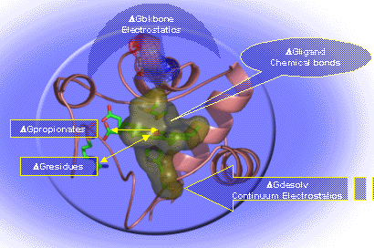
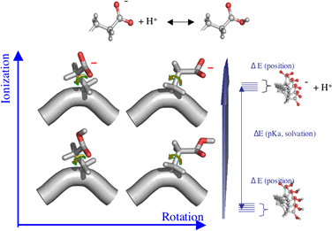
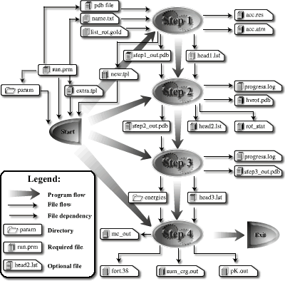

Junjun MaoPostdoctoral Research Fellow |
About Me | Research | Links |
| Address | Physics Department J419 City College of New York Convent Ave. and 138th St. New York, NY 10031 |
Links: |
| Office | J-306, Marshak Science Building | |
| Office Phone | (212)650-6872 | |
| Fax | (212)650-6940 | |
| jmao@sci.ccny.cuny.edu |
How does protein structure modulate the heme redox potential?

- The redox cencter of a cytochrome is a heme:
HEM(oxidized) + e- <=> HEM(reduced)- Porphyrin and axial ligands modify the redox potential by their chemical bonds;
- The heme desolvation (dehydration) energy is controlled by the protein dielectric properties and protein shape;
- The backbone folding affects the interactions between heme charge and backbone dipoles. This varies with different structural motifs;
- Heme propionates control both the redox potential and pH dependence;
- The mutation of the residues, especially those buried ones, changes the heme redox potential through electrostatic intereaction.
My study is focused on the redox potential modulation ability of protein structure. The major tool is MCCE software package developed in our lab.
Considering conformational freedom together with ionization freedom

- The deprotonation of an aspatic acid:
ASPH|Prot <=> ASP- |Prot' + H+- The protonation/deprotonation is often coupled with the heterogeneous reorganization of the protein structure. ;
- The ionizable groups are often intervene each other's protonation/deprotonation, which corresponds to proton transfer reactions;
- The reorganization energy of protein structure reveals how the ionization of a site is linked with dipole rearrangement or ionization of other sites;
- The way of Implicit treatment of the dielectric response with continuum electrostatics is dependent on the way of explicit rotamer sampling. A low dielectric dielectric constant is recommended for extensive rotamer sampling;
- The effect of mutation of the residues on the change of pKas can be predicted.
MCCE program for Linux and Mac OS X platforms
 MCCE program is redesigned to :
- Sample more extensive rotamers;
- Break the size limit of proteins;
- Run on Linux and Mac OS X platforms;
- Have better performance on calculating pKa and Em;
- Calculate reorganiztion energy of a residue ionization;
- Detect proton transfer pathways
Last updated: 09/15/2004